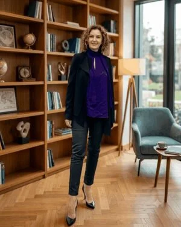

Yeni bir ülkeye taşınmak ya da Uluslararası Bakalorya (IB) veya British A-Level gibi talep düzeyi yüksek bir müfredata geçiş yapmak öğrenciler için bunaltıcı olabilir — yeni bir sistem, yeni bir dil ve bambaşka akademik beklentiler aynı anda üst üste gelir. Çoğu zaman başarısızlığın nedeni zeka eksikliği değil: doğru öğrenme stratejileri, etkili zaman yönetimi ve akademik özgüven eksikliğidir. Biz tam bu noktada devreye giriyor; her öğrencinin ihtiyacına özel bir akademik altyapı kurarak bu boşluğu kapatıyoruz.
Akademik koçlar, tek bir derste geçici bir notu düzelten özel öğretmenlerden farklıdır. Öğrencinin nasıl düşündüğünü, nasıl öğrendiğini ve baskı altında nasıl çalıştığını anlar; buradan kalıcı stratejiler geliştirir. Not ortalamalarının arkasındaki asıl etkenlerle — öğrenme alışkanlıkları, zaman yönetimi ve özgüven — çalışır.
Geleneksel eğitim öğrencilere neyi öğreneceklerini öğretirken, akademik koç nasıl öğreneceklerini öğretir. Beyin için kişisel antrenör gibi çalışır — öğrencinin, seçkin akademik ortamları aşmak için ihtiyaç duyduğu psikolojik ve yapısal çerçeveyi inşa eder. Cevapları sunmak yerine bağımsız liderler yetiştirir:
Akademik koç; psikoloji, strateji ve pedagojinin kesişiminde çalışır. Üç ayrı boyutta özelleştirilmiş bir plan inşa eder.
Öğrenme açıklarını tespit eder, aşırı iş yüklerini parçalara böler ve aktif geri çağırmayı öğretir. Karmaşık müfredatları günlük küçük hedeflere dönüştüren hiper-kişiselleştirilmiş çalışma çerçeveleri tasarlar.
Adanmış ve tarafsız bir ortak olarak hizmet eder. Bir ebeveyn ya da okul öğretmeninin aksine koç; ilerlemenin ölçüldüğü, stratejilerin sürekli optimize edildiği ve hedeflerin titizlikle korunduğu nötr, yüksek beklentili bir ortam sağlar.
Nihai hedef kendi kendini gereksiz kılmaktır. İyi bir akademik koç bağımlılık yaratmaz; derin bir öz-yeterlilik geliştirir — öğrenciyi en iyi üniversitelerde ve gelecekteki kariyerinde bağımsız olarak başarılı olmak için tam donanımlı bırakır.
| Özellik | Özel Öğretmen | Okul Rehber Öğretmeni | Akademik Koç |
|---|---|---|---|
| Ana Odak | İçerik — Matematiği C'den A'ya çıkarmak. | Kurum — ders programı, krediler, kriz yönetimi. | Sistem & Zihniyeti — her derste A alacak alışkanlıkları inşa etmek. |
| Çalışma Kapsamı | Reaktif ve kısa vadeli — bir sonraki sınava odaklı. | Makro ve sistemik — mezuniyet gereksinimlerine odaklı. | Proaktif ve ömür boyu — bilişsel beceri kazanımına odaklı. |
| Temel Değer | Ders kitabının ne anlama geldiğini açıklar. | Öğrencinin nerede olması gerektiğini yönetir. | Öğrenciyi tüm iş yükünü fethetmek için güçlendirir. |
| İletişim Sıklığı & Takip | Sadece ders saatinde (haftada 1–2 saat) iletişim kurar; ders bitince takip durur. | Genellikle kriz anlarında veya dönemde 1–2 kez zorunlu resmi görüşmelerde ulaşılabilir. | Haftalık düzenli seanslar ve hafta içi anlık (WhatsApp vb.) takip mekanizmasıyla sürekli etkindir. |
| Motivasyon Kaynağı | Dışsal ve kısa vadeli (Örn: "Bu sınavı geçmelisin"). | Kurumsal beklentiler (Örn: "Okul kurallarına ve takvime uymalısın"). | İçsel ve kalıcı — öğrencinin kendi potansiyelini, ilgi alanlarını ve "neden"ini keşfetmesini sağlar. |
| Aile ile İlişki | Sadece öğrencinin o dersteki anlık not durumu hakkında aileyi bilgilendirir. | Okulun genel kuralları veya disiplin/başarı süreçleri için aileyle resmi temas kurar. | Aile–öğrenci arasındaki akademik çatışmaları yönetir; evdeki çalışma ortamını optimize etmek için veliye de rehberlik eder. |
| Dil ve Adaptasyon | Sadece o dildeki ders içeriğini anlatır; dil bariyerini aşma stratejisi sunmaz. | Okul içi oryantasyonla sınırlıdır; uluslararası müfredat arası geçiş travmasını derinlemesine çözemez. | Özlem'in uzmanlık alanı: uluslararası okula geçişteki "akademik kültür şokunu" ve yabancı dilde eğitim kaygısını sistemli şekilde çözer. |
| Problem Çözme Biçimi | Doğrudan: sorunun cevabını veya çözüm yolunu öğrenciye doğrudan verir. | Yönlendirici: okul içi kurallara ve prosedürlere göre yönlendirme yapar. | Sorgulayıcı (Koçluk): doğru sorularla öğrencinin kendi çözüm yolunu ve çalışma metodunu bulmasını sağlar. |
Akademik koç; bunaltıcı akademik baskıyı, öğrencinin tam olarak nasıl kazanacağını bildiği yapılandırılmış bir oyuna dönüştürür. Stresi stratejiyle, sürtüşmeyi akışla, şüpheyi derin ve sarsılmaz bir yetkinlikle değiştirir.
Sadece notları yükseltmezler — öğrencinin yaşam boyu sürecek tüm kapasitesini yükseltirler.
Ücretsiz Değerlendirme Yap →Koçluğumuz üç temel geçiş senaryosu için özelleştirilmiştir.
Ulusal sistemden IB (PYP, MYP, DP) veya İngiliz müfredatına (IGCSE, A-Level) geçiş yapan öğrenciler. Yeni değerlendirme sistemi, beklentiler ve çalışma yöntemi konusunda rehberlik.
Yeni küresel okul ortamının stresini ve "akademik kültür şoku"nu yöneten öğrenciler. Farklı pedagojik yaklaşımlara adaptasyon, akran dinamikleri ve özgüven inşası.
Yalnızca İngilizce öğretime uyum sağladıkları için notları geçici olarak düşen zeki öğrenciler. Akademik İngilizce stratejileri ve içeriği dil engelinden bağımsız kavrama yöntemleri.
Sadece bir danışman değil — haftalık sistemi olan, çocuğunuzun akademik yolculuğunu bilen bir koç.
| Paket | Temel Koçluk | Tam Destek |
| Öğrenci seansları | 8 × 30 dk / ay | 16 × 30 dk / ay |
| Ebeveyn seansı | 2 check-in / ay | 4 check-in / ay |
| Öğrenme stratejileri & zaman yönetimi | Kişiselleştirilmiş plan | Plan + yürütücü işlev gelişimi |
| Akademik takvim | Müfredat geçişi için bütünleşik | Müfredat geçişi için bütünleşik |
| Ödev & proje takibi | Yönetim desteği | Gerçek zamanlı — okul portalı |
| Okul sistemleri erişimi (ManageBac, iSAMS, Toddle) | Not, ödev & devamsızlık takibi | |
| Haftalık aksiyon planı | ✓ ebeveyn için yazılı | ✓ ebeveyn için sözlü ve yazılı |
| Aylık ilerleme raporu | ✓ kapsamlı | |
| Sınav dönemi hazırlığı | Yoğun hazırlık seansları | |
| Mesai saatleri içinde | 7 gün — hafta sonu dahil | |
| Ücret aylık |
AED 900 | AED 1,500 |
| Hemen Başlayın → | Hemen Başlayalım → |
Bu test, çocukların akademik ve bilişsel alanlardaki güçlü ve zayıf yönlerini doğrudan ortaya çıkaran detaylı bir zihinsel profil sunar. Sözel ve sözel olmayan akıl yürütme ile temel akademik becerileri analiz eden platform, kişiselleştirilmiş bir sonuç raporu ile gelişim alanlarını net bir şekilde listeler. Detaylı bilgi için Eduentry → veya adaptif testin nasıl çalıştığını anlatan rehberimiz →
Çocuğunuzun IB yılını, mevcut zorluklarını ve hedeflerini anlatan kısa bir değerlendirme formunu doldurursunuz. 5 dakika sürer, tamamen ücretsizdir.
Değerlendirme sonuçlarına göre Özlem sizi arar. Bu görüşmede çocuğunuzun profilini, okul sistemini ve birlikte neler yapabileceğinizi konuşursunuz. Taahhüt gerektirmez.
İlk seansla birlikte çocuğunuzun öğrenme profili, öncelikli geliştirme alanları ve ilk 30 günlük aksiyon planı hazırlanır. Her şeyin yazılı olduğu bir yol haritanız olur.
Her hafta 2 kez Zoom'da buluşursunuz. Her seans sonrası haftalık aksiyon raporu e-postayla gelir. Çocuğunuz için en uygun adımları bilirsiniz.

20 yılı aşkın süre TED İstanbul Koleji, ENKA Okulları ve IICS'de IB uzmanı olarak çalıştı. Singapur, Myanmar, Fransa, Azerbaycan ve Dubai'de expatriyat anne olarak çocuklarını uluslararası okullarda okuttu. Harvard Eğitim Yüksekokulu mezunu.
Özel öğretmen belirli bir konuyu öğretir. Akademik koç ise çocuğunuza nasıl öğreneceğini öğretir — öğrenme stratejileri, zaman yönetimi ve akademik özgüven. Seanslar hem ebeveyne hem de öğrenciye yönelik olabilir; Özlem her ailenin ihtiyacına göre yapılandırır.
Haftada 2 kez birebir görüşme yapıyoruz. Her seans 30 dakikadır. Seans tarihleri her ayın başında karşılıklı belirlenir. Paket; seansların yanı sıra haftalık yazılı aksiyon planı ve mesai saatleri içinde WhatsApp erişimi de içerir.
Evet — 30 dakika, net bir gündem ve hazırlıklı bir koçla son derece verimli olabilir. Her seans belirli bir hedefle başlar: o haftanın öncelikleri, takılan bir konu ya da yaklaşan bir sınav. Odaklanmış, kısa seansların uzun ama dağınık görüşmelerden çok daha etkili olduğunu görüyoruz. Seans dışındaki WhatsApp erişimi ve haftalık aksiyon planı da sürekliliği sağlar.
Yeni okul veya müfredatın ilk haftalarında başlamak idealdir — alışkanlıklar ve sistemler bu dönemde şekillenir. Ancak yıl ortasında, zorluğun ortasında ya da sınav öncesinde de başlanabilir. Her aşamanın farklı öncelikleri vardır ve Özlem buna göre plan yapar.
Minimum 3 ay taahhüdü gereklidir. İptal etmek istediğinizde en az 1 hafta öncesinden bildirmeniz yeterli. 3 aylık paket olarak sunulur.
Hayır — tamamen online olduğundan dünyanın her yerinden ebeveynlerle çalışıyoruz. Dubai, Türkiye, İngiltere, Almanya, Hollanda ve Kanada'daki ailelerle aktif seanslar yapılmaktadır.
eduentry.com'daki ücretsiz değerlendirmeyi doldurun. Özlem sonuçlarınıza göre sizi arayacak — taahhüt yok, satış baskısı yok.
eduentry.com'da Değerlendirme Yap →